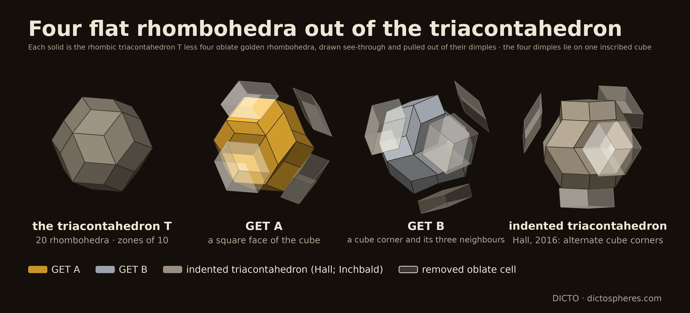
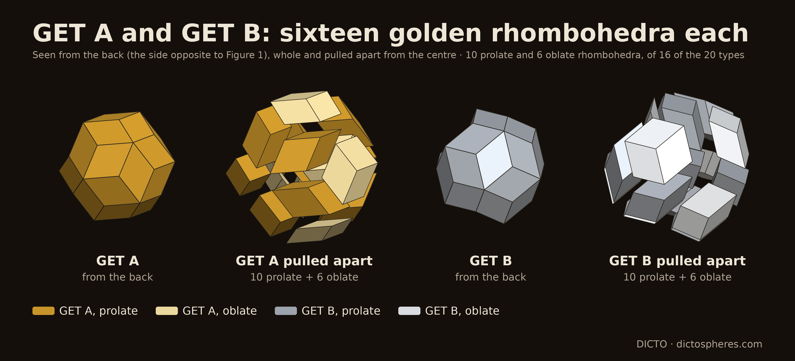
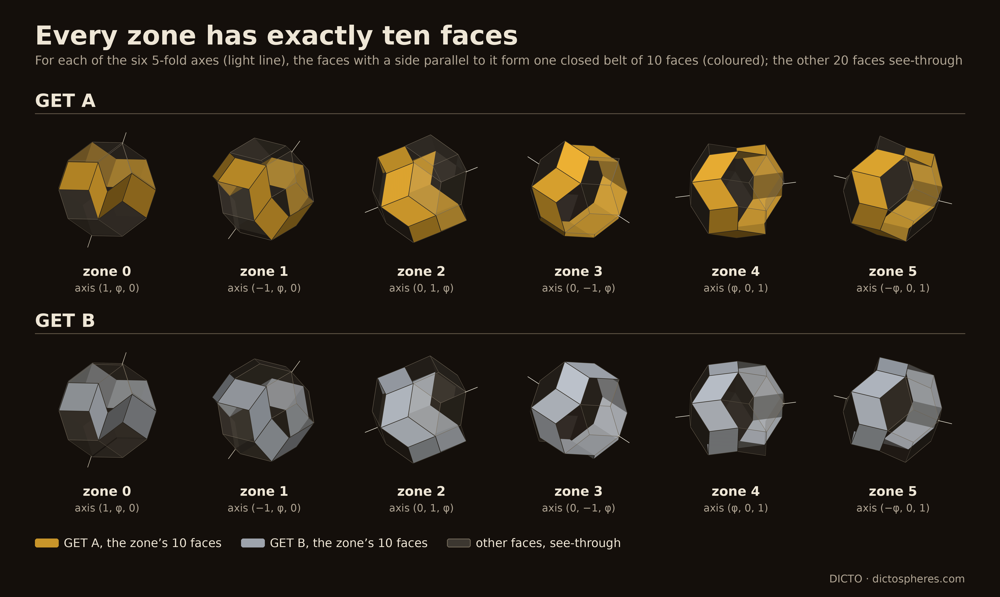
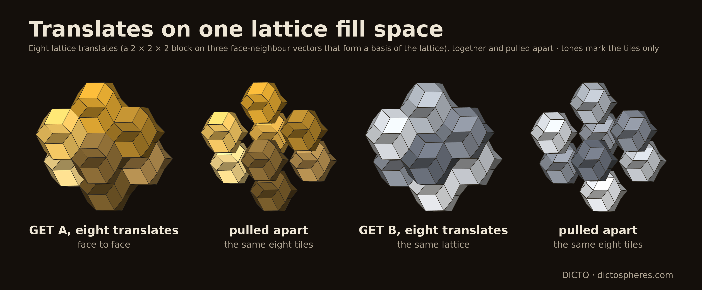

The DICTO Grünbaum–Escher Triacontahedron (GET A and GET B): rhombic monohedral parallelohedra whose zones all have ten faces
Version 2 redraws the figures so that lines behind solid faces are hidden; no result changes.
Take a polyhedron whose faces are parallelograms. Walk from a face across one of its edges to the next face, and keep crossing the edges parallel to the first: the faces you pass through close into a belt, a zone. On a cube every zone has 4 faces, on the rhombic dodecahedron 6. Grünbaum asked how long the zones of a space-filling solid with congruent rhombic faces can be when all of them have the same length.
In his paper on the Bilinski dodecahedron [1] Grünbaum considers polyhedra of spherical type, "polyhedra with surface homeomorphic to a sphere and adjacent faces not coplanar" (author's version, p. 11), and parallelohedra, polyhedra whose translates tile space. He shows that indenting the Fedorov rhombic icosahedron F twice gives two parallelohedra D1 and D2, and that rhombic monohedral parallelohedra with arbitrarily long zones exist. Then (p. 17):
"Given an even integer k ≥ 4, is there a rhombic monohedral parallelohedron such that every zone has exactly k faces? The cube has k = 4, the rhombic dodecahedra K and B have k = 6, and the doubly indented icosahedra D1 and D2 are examples with k = 8. No information is available for any k ≥ 10."
No convex example exists beyond k = 6: a convex parallelohedron has belts (zones) of 4 or 6 faces only (Venkov [4], McMullen [5]). So every answer for k ≥ 8 is a nonconvex solid. Two pages earlier (p. 15), after D1 and D2, Grünbaum writes of the indentations of the rhombic icosahedron F and the rhombic triacontahedron T: "None of the other isozonohedra obtainable by indentation of F or T seem to be parallelohedra."
This paper gives two solids for k = 10, proves their properties exactly, and places them in the family of indented triacontahedra. How results are marked. Exact: proved by a computation in exact arithmetic (integers and ℤ[φ], no floating point), with the scripts and logs in the data link. Lean: a theorem of the Lean 4 files with Mathlib [18, 19], compiled with no sorry and only the standard axioms. By hand: a proof on paper. Throughout, φ = (1 + √5)/2.
Two solids made of 16 golden rhombohedra each answer the question for k = 10; they differ in where four small pieces are missing, and no turning or reflecting makes one into the other.
Theorem 1 (Grünbaum's question at k = 10). Exact; for GET B also Lean (§9). Let Λ be the lattice of §3. GET A* and GET B (§3, Table 1) are polyhedra of spherical type; each has 30 faces, all of them congruent golden rhombi (diagonals in the ratio φ), 32 corners and 60 edges; each has six zones and every zone has exactly 10 faces; and the translates P + λ, λ ∈ Λ, tile space face to face, for P = GET A and for P = GET B. Hence GET A and GET B are rhombic monohedral parallelohedra of spherical type with every zone of exactly 10 faces, and the answer to Grünbaum's question for k = 10 is yes.
* First shown by J. Kostick in a vZome array (“concavo-convex triacon array”, 3 April 2022), without proof; rediscovered by DICTO as GET A.
Theorem 2 (two solids, one lattice). Exact. GET A and GET B are not congruent, even as mirror images. GET A has 4 symmetries (2 rotations and 2 reflections), GET B has 3 (rotations about one axis). They tile by the same lattice Λ, are built from golden rhombohedra of the same 16 of the 20 types, 10 prolate and 6 oblate, and have the same volume 20 + 32φ, equal to the covolume of Λ.
Corollary 3 (the indentation remark). Exact. GET A and GET B are obtained from the rhombic triacontahedron T by indenting four of its corners, and they are parallelohedra. So Grünbaum's tentative remark that "none of the other isozonohedra obtainable by indentation of F or T seem to be parallelohedra" [1, p. 15] does not hold.
The k = 8 case shows the same pattern: Grünbaum's D1 and D2 are two non-congruent indentations of one convex solid, the rhombic icosahedron, that fill space. GET A and GET B are the triacontahedron's pair. The proofs are in §4 (Theorem 1), §5 (Theorem 2) and §6 (Corollary 3).
Everything is built on the six 5-fold axes of the icosahedron, numbered 0 to 5:
e0 = (1, φ, 0), e1 = (−1, φ, 0), e2 = (0, 1, φ), e3 = (0, −1, φ), e4 = (φ, 0, 1), e5 = (−φ, 0, 1).
Any two of them span the same golden rhombus, with side √(φ + 2) and diagonals 2 and 2φ; any three span a golden rhombohedron, prolate (volume 2 + 2φ) or oblate (volume 2φ), and each of the 20 triples ijk is a cell type, 10 prolate and 10 oblate. A point p ∈ ℤ6 stands for Σ piei; this map is one to one, since the axes are independent over ℚ, which is the six-dimensional description of the golden-rhombohedron tilings of Kramer and Neri [17]. A cell (p; ijk) is the rhombohedron p + [0, 1]ei + [0, 1]ej + [0, 1]ek. The rhombic triacontahedron T is the sum of the six segments [0, 1]ei, a convex zonohedron with 30 faces, 32 corners (20 where three faces meet, 12 where five meet) and six zones of 10; it is cut by its classical dissection into 20 cells, one of each type, of volume 20 + 40φ.
| the 16 cells | removed from T | |
|---|---|---|
| GET A | (000000; 012) (001000; 013) (001100; 014) (000000; 024) (010000; 025) (001000; 034) (011000; 035) (011100; 045) (000001; 123) (000000; 125) (101000; 134) (001000; 135) (001100; 145) (000000; 234) (000000; 235) (000100; 245) | (001110; 015) (000010; 023) (100000; 124) (111000; 345) |
| GET B | (000000; 012) (001010; 013) (001000; 014) (000000; 024) (010000; 025) (011001; 034) (011010; 035) (011000; 045) (000001; 123) (000000; 125) (001001; 134) (001010; 135) (001000; 145) (000001; 234) (000010; 235) (000000; 245) | (001110; 015) (000010; 023) (100000; 124) (000000; 345) |
Each solid is T less four oblate cells, of the types 015, 023, 124 and 345; every axis occurs in exactly two of these types. Each removed cell sits at a corner of T where three faces meet, and its removal replaces those three faces by three inward ones, a dimple; this keeps the number of faces at 30 and every zone at 10. Figure 1 shows the dimples and Figure 2 the cells.


The proof has two parts. First the surface: count the faces, check that they close up like a sphere, that no two neighbours lie in one plane, and that the belts all have ten faces. Then the tiling: the solid has exactly the volume of one lattice cell, and it does not overlap its neighbours, so its copies must fill space.
Lemma 4 (density and overlap). By hand; standard. Let P ⊂ ℝ³ be compact, the closure of its interior, with boundary of volume zero, and let Λ be a lattice. If vol P = covol Λ and the interiors of P and P + λ are disjoint for every λ ∈ Λ ∖ {0}, then the translates P + Λ tile space.
Proof. The translates have disjoint interiors, since (P + μ) ∩ (P + ν) = ((P ∩ (P + ν − μ)) + μ). Over a fundamental domain D of Λ, the function Σλ 1P+λ is at most 1 off the null set of boundaries and has integral vol P = vol D, so it is 1 almost everywhere: the union of the translates has full measure. The family is locally finite, so the union is closed, and a closed set of full measure is all of ℝ³. Only translates with |λ| ≤ 2R can meet P, where R is the largest distance from a point of P to its centre, so finitely many checks suffice. ∎
Proposition 5 (the exact facts). Exact (studies 2026-11-15-grunbaum-k10 and the script get_exact.py beside this paper). For P = GET A and for P = GET B:
(a) The union of the 16 cells of Table 1 has as boundary exactly 30 rhombi (p; ij) = p + [0, 1]ei + [0, 1]ej; the surface is a closed 2-manifold with 32 corners and 60 edges, Euler characteristic 2, and the faces round every corner form one cycle; so it is a sphere.
(b) Every face is spanned by two of the axes, so all 30 are congruent golden rhombi, and each of the 15 pair types ij occurs on exactly two faces; at every edge the outward normals of the two faces meet at 36°, 72° or 108°, never at 0°, so no two adjacent faces are coplanar.
(c) For each axis d, the 10 faces with a side parallel to ed form one closed belt, crossed in order through those sides; there are six zones, of exactly 10 faces each, and every two zones cross exactly twice.
(d) Vol P = Σ |det(ei, ej, ek)| over the cells = 20 + 32φ = |det(b1, b2, b3)| (the bm read in ℝ³) = covol Λ.
(e) For each type ij, the vector λij from the face of type ij with outward normal −(ei × ej) to the one with outward normal +(ei × ej) lies in Λ, and the 15 vectors generate Λ (index 1); so each face of P is a face of the translate P + λ, with the solids on opposite sides. There are 14 such neighbour vectors ±λij.
(f) No translate P + λ with λ ∈ Λ ∖ {0} and |λ| ≤ 2R overlaps P: an exact separating-axis test between every cell of P and every cell of each of the 14 translates within reach (study 2026-11-15-grunbaum-k10, tile_check.py; "tiles=True translates=14" for both).
Proof of Theorem 1. (a)–(c) give a polyhedron of spherical type with 30 congruent golden rhombic faces and six zones of 10. (d) and (f) with Lemma 4 give the tiling by P + Λ, and (e) makes it face to face. ∎
An independent floating-point check in the same study agrees (verify_k10.py): 200,000 random points in a fundamental domain are each covered exactly once, and no two faces cross. For GET B the whole theorem, zones, congruence, the sphere, volume = covolume, the face matching and the tiling, is also checked by Lean's kernel (§9). Figures 3 and 4 show the zones and a block of the tiling.


A congruence between two solids must also match their symmetries, and GET A and GET B have different numbers of symmetries, four and three. That alone shows they are different; the computation also checks every possible match directly.
Proof. Any isometry between two of these solids maps their edge directions, the six axes, onto themselves up to sign, so it is a translation combined with one of the 120 symmetries of the six-axis star, a signed permutation of the axes that keeps their inner products (60 of them rotations). The script tests every one of the 120 on the unoriented face sets, up to translation in ℤ6: GET A is mapped to a translate of itself by 2 rotations and 2 reflections, GET B by 3 rotations and no reflection, and no symmetry maps GET A to a translate of GET B. Since the symmetry groups have orders 4 and 3, no isometry, of either hand, can map one solid onto the other. The lattice, the cell types and the volumes are in Table 1 and Proposition 5. ∎
GET A and GET B are not alone: a third solid of the same kind was built in 2016, and GET A itself appeared in 2022, both as models that fill space, without proof or zone count. All three come from one cube inside the triacontahedron.
Proof of Corollary 3. By Table 1 and Proposition 5 (a), each of GET A and GET B is T with four of its three-face corners dimpled, an indentation of T in Grünbaum's sense [1, pp. 14–15], and by Theorem 1 it is a parallelohedron. ∎
Grünbaum had not examined these solids: in his web supplement to Bilinski's paper he writes of the rhombic triacontahedron and the rhombic icosahedron that "multiple indentations lead to a considerable number of polyhedra, which have not been examined in detail" [2].
Proposition 6 (one cube, three patterns). Exact. In one copy of T, as the search of §7 found them, the four dimpled corners of GET A, of GET B and of the indented rhombic triacontahedron (Hall, 2016; Inchbald; Senechal–Taylor, c. 2023) all lie on one of the five cubes inscribed in T on its 20 three-face corners: on a square face of the cube (GET A), at a corner of the cube and its three neighbours (GET B), and at four alternate corners, a regular tetrahedron (the indented triacontahedron). All three remove oblate cells of the types 015, 023, 124 and 345; GET A and GET B have three removed cells in common, GET B and the indented triacontahedron three, GET A and the indented triacontahedron two. The indented triacontahedron, too, has 30 faces, 32 corners and 60 edges, no two adjacent faces coplanar, six zones of exactly 10 faces, and face-pair vectors generating the same lattice Λ; its symmetry group has order 12, all rotations, and it is congruent neither to GET A nor to GET B.
Proof. get_exact.py: for each solid it finds the copy of T that keeps 18 of its faces, recovers the four removed cells as the oblate cells whose six faces make up exactly the difference of the two surfaces, finds the five inscribed cubes among the 125,970 sets of 8 three-face corners by their exact distances, and tests the dimpled corners against them; zones, lattice and symmetries as in §4 and §5. ∎
So, moving one dimple at a time along the edges and diagonals of a single cube, the square of GET A becomes the corner of GET B and then the tetrahedron of the indented triacontahedron.
Hall's solid. D. Hall's "Dimpled Rhombic Triacontahedron" (Sketchfab, 28 June 2016) [7] is T with four dimples that "result from removing one golden rhombohedron from each of four vertices having tetrahedral symmetry"; "the DRT is chiral", and it packs as a lattice in which "fourteen such DRTs will completely enclose one in their center". An exact corner-matching test (study 2026-11-20-hall-2016-check) builds the solid for each of the 10 regular tetrahedra of three-face corners of T: each gives the indented triacontahedron, five in one hand and five in the other, by 12 maps each, and never GET A or GET B. It is the same solid as G. Inchbald's dimpled rhombic triacontahedron [8] (study 2026-11-17-inchbald-check). Its tiling by translates is proved exactly in study 2026-11-17-get-mixing: written as 17 cells of a tiling of T less one corner cell, its exact overlap volume with each of its 14 lattice translates within reach is 0, and its volume equals the covolume, 20 + 32φ. Proposition 6 adds the zone count: every zone of the indented triacontahedron has exactly 10 faces. It therefore answers Grünbaum's question at k = 10 too; it was shown in 2016, without zones, without proof and without reference to Grünbaum, and its proof of tiling (2026) and zone count are given here and in the studies cited.
Kostick's array. J. Kostick's vZome page "Triacon arrays" (3 April 2022) [9] shows a "concavo-convex triacon array", "dimples oriented about z-axis, so as to fill space in a directional way". An exact reading of its exported panels (study 2026-11-20-hall-2016-check; 354 panels, each checked to be a golden rhombus on the six axes) finds 19 cells, each showing 25 or 26 of its 30 faces, all translates of one another, with the dimples of GET A, congruent to GET A by the corner test, and with differences generating exactly Λ. A cell with any further dimple would be smaller than the covolume and could not fill that lattice, so the cell is GET A, and its zones have 10 faces each (Theorem 1). The page mentions "a set of 3 parallel zones indicated as blue bands" but gives no zone sizes, no proof and no reference to Grünbaum. GET B was not seen in Kostick's arrays or in Hall's five dimpled models.
The solids were found in two independent ways: by pushing corners of the triacontahedron in, one at a time, and by growing a k = 8 solid of Grünbaum's kind by one whole belt of faces.
Proposition 7 (two routes to GET). Exact (study 2026-11-15-grunbaum-k10).
(i) Corner indentations. Dimpling or un-dimpling one golden rhombohedron at a three-face corner keeps the face count and every zone, and each move is tested for embedding exactly. From T, depth 3 gives 10 classes, all with face-pair rank 6 (no lattice); depth 4 gives 29 classes, exactly three with rank 3: GET A, GET B and the indented triacontahedron. To depth 12 there are 4,827 classes, 8 of them with rank 3 (§11). On five axes the same search finds exactly two tilers, of the type of Grünbaum's D1 and D2, at depth 2.
(ii) The gnomon. DICTO's gnomon [20, Ch. 14] (after Euclid and Heron) is the shell that, added to a solid, gives the next one. Read here as one whole zone layer: cut a k = 8 surface along a closed edge path with two edges of each of its five directions, shift one side by e5 and close the cut with ten rhombi; every old zone grows from 8 to 10 faces and the new zone has 10. From the rhombic icosahedron this gives T (control). From all 18 surfaces of the rhombic icosahedron's family to flip depth 3, 19,048 cut paths give 23,255 distinct k = 10 surfaces, of face-pair ranks 6 (22,093), 5 (1,145) and 3 (17). Of the 17, six have a degenerate lattice (exact determinant 0), eight cover some points three times with their translates (floating-point test), and three cover every test point exactly once: GET A, GET B and the indented triacontahedron. Exactly two of the 18 sources reach them, and they are the two k = 8 tilers of the D1/D2 type.
So GET is a k = 8 parallelohedron of Grünbaum's kind with one zone layer added: DICTO's gnomon step from k = 8 to k = 10.
Within the surfaces whose zones each cross every other zone exactly twice, the face pairs alone fix the lattice, and the lattice fixes how many rhombohedra of each kind a tiler can contain. That leaves room only for GET's count: 16 cells of 16 different types.
The class C(n). Closed surfaces of spherical type made of golden rhombi on n of the six axes, with one zone per axis and every two zones crossing exactly twice; they have n(n − 1) faces and k = 2(n − 1) faces in every zone. GET A, GET B, T, the indented triacontahedron and D1, D2 (n = 5) are in this class.
Lemma 8 (zone words). By hand. Walk once round the zone of axis a; each face is crossed by a step ±ec, c its other axis. The walk closes and the axes are independent in ℤn, so the two c-faces carry opposite signs, and λac, the vector between them, is the sum of the signed steps strictly between the two c's: its entries are 0 or ±1, zero at a and at c, and λac ≠ 0.
Lemma 9 (lattice and cells). By hand. In a face-to-face lattice tiling every face is matched by the other face of its pair on a neighbour, so every λac lies in the lattice, and the λ's span a rank-3 lattice L ⊂ ℤn with covolume |Σ pijk(L) det(ei, ej, ek)|, the pijk being the 3 × 3 minors of a basis (Cauchy–Binet). If P is a union of golden rhombohedra, then in the torus ℝ³/Λ the dual surfaces of the families i, j, k meet with algebraic intersection number pijk(L), each triple point being a cell of type ijk; so the number of cells of type ijk is at least |pijk|, and volume = covolume forces equality and pijk det(ei, ej, ek) ≥ 0 for all types (sign coherence).
Theorem 10 (the cells of a tiler in C(6)). Exact (vclass2.py, vclass3.py, study 2026-11-15-grunbaum-k10). Every polyhedron in class C(6) that is a union of golden rhombohedra on the six axes and tiles space face to face by the translates of a lattice consists of exactly 16 golden rhombohedra, one of each of 16 of the 20 types, the four missing types being oblate; so its volume is 20 + 32φ. At n = 5 (k = 8) the same holds with 8 of the 10 types: the rhombic icosahedron less two oblate cells, as in D1 and D2.
Proof. By Lemma 8 the face-pair lattice is the row space of [I | X] with X ∈ {0, ±1}3×(n−3), up to relabelling the axes. All 19,683 such X for n = 6 are run through the zone-word conditions of Lemma 8, the pair conditions of Lemma 9 and the sign coherence, with the cell counts |pijk| read off (Table 2). The 8 sign-coherent survivors, 5 for the golden star and 3 for its Galois twin (√5 → −√5; the twin star is the golden one scaled by φ and relabelled), all have |pijk| = 1 on 16 types and 0 on four oblate types. ∎
| n (k) | subspaces | zone words fit | pairs agree, rank 3 | sign-coherent, golden / twin | cells |
|---|---|---|---|---|---|
| 5 (8) | 729 | 192 | 192 | 5 / 3 | 8 of 10 types; D1 and D2's lattice among them |
| 6 (10) | 19,683 | 768 | 768 | 5 / 3 | 16 of 20 types |
Exact scope. Theorem 10 covers only: surfaces of class C(6) (30 faces, every two zones crossing exactly twice, golden rhombi on the six axes); solids that are unions of golden rhombohedra with corners in ℤ6; and lattice tilings that are face to face. It says nothing about other face counts, zones that cross more than twice, other rhombi, solids that are not unions of rhombohedra, or tilings that are not lattice or not face to face. It fixes the cell types and the volume, not the solid: GET A, GET B and other arrangements of the same 16 types share them. The indented triacontahedron has the same lattice and volume, but none of the 160 tilings of T examined in study 2026-11-17-inchbald-check contains all four of its removed cells, and whether it is a union of 16 golden rhombohedra is not decided (§11).
For GET B the main theorem has also been checked by a proof assistant, so that a reader need not trust our programs: the computer's logical kernel re-decides every exact fact.
The statement, in Lean 4 with Mathlib [18, 19], is to be registered on Palomar; the Lean development is at studies/2026-11-20-palomar-grunbaum/package in the data link (Challenge/GrunbaumK10.lean, Solution/GrunbaumK10.lean and the library lean-B/GET). The theorem reads:
theorem grunbaum_k10 :
∃ (P : Set Space) (F : Fin 30 → Parallelogram) (b : Fin 3 → Space),
IsSphericalPolyhedron P F ∧ IsRhombicMonohedral F ∧ (∀ i, (F i).IsGoldenRhombus) ∧
EveryZoneHas F 10 ∧ LinearIndependent ℝ b ∧ TilesByTranslates P (lattice b) ∧
FaceToFace F (lattice b)
theorem grunbaum_k10_parallelohedron :
∃ (m : ℕ) (P : Set Space) (F : Fin m → Parallelogram),
IsSphericalPolyhedron P F ∧ IsRhombicMonohedral F ∧ EveryZoneHas F 10 ∧ IsParallelohedron PHere IsSphericalPolyhedron makes Grünbaum's spherical type precise: a compact solid, the closure of its interior, whose frontier is the union of the faces and is homeomorphic to the sphere; the faces are distinct, meet in a common side, a common corner or not at all, and adjacent faces are not coplanar. A zone is the set of faces reached by crossing sides parallel to one direction, and EveryZoneHas F 10 also states that each zone is the set of all faces with a side of that direction; two calibration theorems check that the definition gives 4 for the cube and 6 for the rhombic dodecahedron. IsParallelohedron is Grünbaum's definition (some set of translates tiles space); the first theorem gives a lattice tiling, which is stronger.
The witness is GET B. The proof checks the exact data in ℤ[φ] by kernel evaluation (decide +kernel, no native_decide): the zones, the congruence of the faces, separating normals, the contacts and the face matching, and the sphere, by separating cones from the interior point (0, φ, 1 + φ) with 435 normals; the tiling follows from volume = covolume with Mathlib's fundamental domains of a ℤ-span. The library has 23 modules and 3,806 lines. The four theorems depend only on the axioms propext, Classical.choice and Quot.sound. Palomar's comparator accepts the solution with Lean's kernel ("Your solution is okay!"), and the independent kernels NanoDa and con-ron accept the same export (con-ron: 46,286 declarations). Three altered copies, with 12 in place of 10, a changed rhombus definition and a proof replaced by sorry, are each rejected. Not formalised: GET A, the non-congruence of Theorem 2, Proposition 6 and Theorem 10.
Known and used. Grünbaum's question, his definitions of spherical type and parallelohedron, his D1 and D2 and his indentation remark [1], with his web Supplement to Bilinski [2] and his Geombinatorics paper [3]; the Bilinski dodecahedron [6]; the belt theorem for convex parallelohedra (Venkov [4], McMullen [5]); the five convex parallelohedra of Fedorov [21]; the rhombic triacontahedron as the zonotope of the six 5-fold axes, its dissection into 10 prolate and 10 oblate golden rhombohedra, and the six-dimensional description of golden-rhombohedron tilings (Kramer and Neri [17]); the golden rhombohedra as the tiles of a three-dimensional Penrose tiling, found by Ammann in 1976 [16]; the indented rhombic triacontahedron of Hall [7] and Inchbald [8]; GET A in Kostick's array [9]; Cauchy–Binet and intersection numbers on the torus (standard); Lemma 4 (standard); Lemmens and Seidel on equiangular lines [15] (Proposition 11); Lean and Mathlib [18, 19], whose fundamental domains of ℤ-spans and golden ratio are used in §9.
Claimed here, not found in the sources checked. GET B as a solid; a proof that GET A and GET B tile space by lattice translates, face to face, with every zone of exactly 10 faces, as an answer to Grünbaum's question at k = 10 (Theorem 1), exact for both and in Lean for GET B; the zone count 10 for the indented triacontahedron and for Kostick's GET A cell, which their sources do not give (Proposition 6, §6); that GET A and GET B are not congruent and share lattice, cell types and volume (Theorem 2); that the remark of [1, p. 15] fails (Corollary 3); the cube that carries all three dimple patterns (Proposition 6); the cell-type classification of Theorem 10 in class C(6); and the two routes of Proposition 7, among them DICTO's gnomon from k = 8. The first public appearance of a k = 10 solid of this kind is Hall's model of 2016, and of GET A Kostick's array of 2022; neither gives zones, a proof or a link to Grünbaum. No claim is made from correspondence.
Sources checked (15 to 20 November 2026; free routes only). Read: Grünbaum [1], author's version 2/3/10 (pp. 9–18; the quotes above are from pp. 11, 15 and 17); Grünbaum [2] (text) and [3] (full); Hungerbühler, Hungerbühler and Pirron [11] (full; monohedra, no parallelohedra or tilings); G. Hart, Virtual Polyhedra, the dissection of the rhombic triacontahedron [12] (page; no sub-assemblies that tile); Hafner and Zitko [13] (page; convex golden rhombic polyhedra, nonconvex ones unnamed, no tiling); Hall's five dimpled-triacontahedron models [7] (page texts and metadata through the public Sketchfab interface, and a thumbnail; the model files need an account and were not taken); Inchbald [8] (page and Internet Archive copies: the dimpling text is absent on 31 March 2022 and present on 23 March 2023); Kostick [9] (post and the exported panels of its three arrays, read exactly); Senechal [16] (talk slides). Abstract only: Senechal and Taylor [10] (closed access; no free copy through Unpaywall, Europe PMC or arXiv); its abstract describes three nonconvex parallelohedra from skewed skeletons of Fedorov's five and "a counterexample to a statement by Grünbaum", and whether any of them is rhombic monohedral with zones of 10 is not known to us. Cited, not read: Venkov [4], McMullen [5], Bilinski [6], Williams [14] (p. 196, an eightfold indentation of T cited by Grünbaum). Not inspected (named by blind reviewers of the Palomar entry): Kostick's earlier page of 2 January 2022 (tetrahedrally and octahedrally dimpled triacontahedra; the reviewer saw no single-cell tiling claimed) and Kabai's two Wolfram Community notebooks of September and October 2022 on space filling with rhombic triacontahedra. OpenAlex lists of the papers citing [1] and [10] (none answers the question). Web searches: "Senechal Taylor parallelohedra nonconvex arXiv"; "nonconvex parallelohedron golden rhombi rhombic triacontahedron indented"; "Hungerbühler Pirron New families of monohedral polyhedra"; "George Hart golden rhombohedra assemblies space filling"; "dimpled rhombic triacontahedron space filling". Formal libraries: Mathlib (fundamental domains of ℤ-spans; no parallelohedra and no zones of polyhedra), GitHub code search for Lean files on parallelohedra or zonohedra (none), the Isabelle AFP index (no zonotope, zonohedron or parallelohedron entry), and web searches for Rocq, HOL Light and Mizar formalisations of parallelohedra or zonohedra (none found). The records are in the studies' prior-art tables.
Three questions are left: whether longer zones are possible, what five further surfaces found in the search are, and what the remaining unread source contains.
Proposition 11 (the top of the ladder in class C). By hand (study 2026-11-15-echo-shapes). In a rhombic monohedral polyhedron all faces are congruent, so the two edge directions of every face meet at one angle up to its supplement. If every two zones cross, every pair of the n edge directions spans a face, so the n directions are equiangular lines; ℝ³ holds at most 6 equiangular lines (Lemmens and Seidel [15]), the six diagonals of the icosahedron at cos = 1/√5. Hence in class C(n), k = 2(n − 1) ≤ 10, and at k = 10 the rhombus is the golden one.
Grünbaum asked in 2010 for a space-filling solid with congruent rhombic faces whose zones all have k faces, and had no example beyond k = 8. The triacontahedron with four flat golden rhombohedra taken out gives one for k = 10, in two different forms, GET A and GET B, that share one lattice; the form GET B is also checked by a proof assistant. They sit with Hall's indented triacontahedron on a single cube of dimples, and within the class of surfaces whose zones cross twice every tiler made of golden rhombohedra has GET's 16 cells of 16 types. GET is built entirely from the two golden rhombohedra of the three-dimensional Penrose tiling (Ammann, 1976 [16]; Kramer and Neri, 1984 [17]), the building blocks of icosahedral quasicrystals, yet its translates fill space on a lattice: a periodic crystal assembled from quasicrystal pieces, a bridge between the periodic and the aperiodic. Like every parallelohedron, it cannot force aperiodicity, since it always admits its lattice tiling; Inchbald notes the same for his dimpled triacontahedron, that further rules would be needed for a quasiperiodic structure [8].
Study 2026-11-15-grunbaum-k10 (data link in the meta line): scripts/zsurf.py (exact surfaces, flips, zones, face pairs), k10_search.py (the indentation search; data/search6.json holds the faces of the rank-3 surfaces), tile_check.py (the exact tiling check; data/tile12.json, cells and lattice), verify_k10.py (the independent floating-point check), vclass2.py, vclass3.py (Theorem 10), gnomon.py, gnomon_source.py (Proposition 7 (ii)), cover_surface.py (the coverage tests of §11), each with its log ending in "FINAL ok". Study 2026-11-20-hall-2016-check: hall_check.py and kostick_cells.py (§6). Study 2026-11-17-get-mixing: the exact tiling of the indented triacontahedron. Study 2026-11-20-palomar-grunbaum: the Lean files, the comparator, kernel and axiom logs (§9). Beside this paper: scripts/getlib.py and get_exact.py (an independent exact re-check of Proposition 5 (a)–(e), Proposition 6 and Theorem 2 from the study's data, written to data/get-exact.json and data/get-exact.log), fig_scenes.py, render3d.py, shots.mjs and fig_compose.py (the figures, each solid drawn from the exact data with asserts), data/supplement-quote.txt (the sentence of [2] quoted in §6, with the checksum of the file it was taken from), and audit.py, which checks every number of the text against the studies' data. Run with Python 3.
DICTO · dictospheres.com